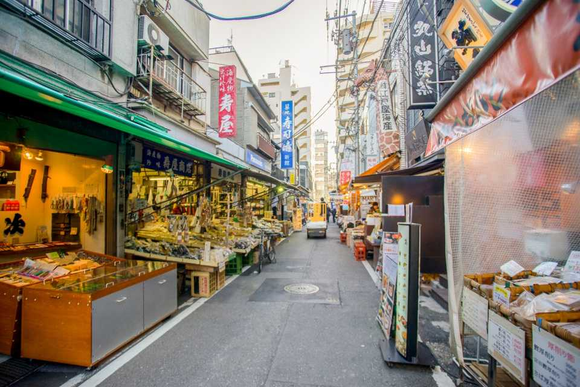

Not Just a Tourist: Tokyo - Day 3
Tsukiji
 Credit: GetYourGuide
Here are some links to places in Tsukiji as well as one for the Temple you'll visit:
Tsukiji Outer Market
Travel Japan
Truly Tokyo
Temple